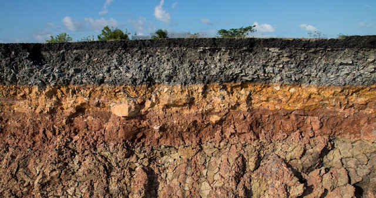

FA_UD3_El suelo
FUNDAMENTOS AGRONÓMICOS
UD 3
EL SUELO
EL SUELO
El suelo es un factor muy importante para el desarrollo de la vida y en nuestro caso, para la obtención de unas correctas producciones agrícolas, forestales o ganaderas.
Propiedades
El suelo es una capa de material delgada y a menudo frágil, que recubre la parte externa de la corteza terrestre en ella se desarrollan las raíces de las plantas.
Está constituido por tres fracciones:
-
Fracción Sólida: materia orgánica en descomposición y elementos minerales (arcilla, limo, arena, etc.). Ocupa el 50 % del suelo en volumen, correspondiendo un 5 % a compuestos orgánicos y un 45 % a compuestos minerales.
-
Fracción Líquida: es el agua que hay en el suelo. Ocupa parte de los espacios que existen entre las diferentes partículas de la fracción sólida. Cuando un suelo está inundado todos los espacios están ocupados por el agua, no habiendo espacio para el aire. Su contenido en el suelo es del 25 %.
-
Fracción Gaseosa: es el aire existente en el suelo. Ocupa los poros que no están ocupados por el agua. Su contenido en el suelo es también del 25 %.

Las funciones más importantes que tiene un suelo son:
-
Servir de anclaje para el sistema radicular de las plantas.
-
Almacenar temporalmente parte del agua que está en el suelo y ponerlo a disposición de la planta.
-
Aporta la aireación necesaria para que las raíces de las plantas se puedan desarrollar.
-
Proporciona los nutrientes minerales que las plantas necesitan para su correcto desarrollo.
Origen y formación
El punto de inicio para la formación del suelo o edafogénesis es la roca madre. Esta va a sufrir una serie de procesos, que la transformará total o parcialmente; suele comenzar con la ruptura de dicha roca en pequeñas partículas que nos darán los materiales del suelo. Estas transformaciones son muy lentas.
Los geólogos clasifican las rocas en tres grandes tipos: ígneas, sedimentarias y metamórficas.
-
Rocas ígneas: son el material básico de la corteza terrestre, se han creado por el enfriamiento de los materiales fundidos de las profundidades de la tierra. El granito es una roca ígnea.
-
Rocas sedimentarias: se forman cuando el aire, agua, u otro agente depositan materiales, sedimentos, procedentes de la alteración en superficie de otras rocas, en las concavidades de los terrenos. Posteriormente estos sedimentes sufren proceso de compactación y cementación. Un ejemplo de rocas sedimentarias son las rocas calizas.
-
Rocas metamórficas: cuando a cualquier tipo de roca se le somete a altas presiones o temperaturas parte de sus minerales sufren transformaciones que originaran un nuevo tipo de roca. Un ejemplo característico son las pizarras y mármoles.
La formación del suelo depende de cinco factores:
La naturaleza de la roca original: Dependiendo de la composición inicial de los minerales que la forman, se realizará un tipo distinto de meteorización o descomposición de de las rocas. Según estos materiales iniciales, tendremos las distintas propiedades físicas y químicas de los suelos.
El clima: Influye directamente mediante la humedad y la temperatura e indirectamente mediante ella vegetación. Sin temperatura y humedad no se puede formar suelo. El clima es el principal agente de alteración química del suelo (meteorización química) y de la fragmentación física (meteorización física).
El relieve del terreno: Condiciona el desarrollo del suelo en cuanto a profundidad y drenaje. Los relieves escarpados dan suelos sueltos y poco profundos y los relieves más moderados (valle) dan suelos más profundos.
Los seres vivos: Condicionan los procesos químicos y físicos del suelo favoreciendo su fertilidad. La vegetación es clave en la formación del suelo por su acción de meteorización (musgos, líquenes, raíces…) y porque constituyen la principal fuente de materia orgánica del suelo. Los animales que viven en el suelo constituyen lo que se llama la fauna del suelo, son los responsables de la alteración de la materia orgánica y de su mezcla con el mineral del suelo. La vida sobre y dentro del suelo incide directamente en su formación.
El tiempo: Los procesos de formación del suelo son largos y su duración determina su cantidad y profundidad. Los suelos más antiguos son los que poseen mayores espesores y, por el contrario, los suelos más jóvenes son los de menos profundidad.
Todo suelo se origina a partir de una roca sólida, estos procesos de formación del suelo son largos.
El clima y las plantas son fundamentalmente los agentes trasformadores que convierten a la roca, en una pequeña capa de partículas fracturadas con alguna mezcla de materia orgánica en ella. A este proceso se le llama meteorización.
Se suele distinguir dos tipos de meteorización:
La meteorización física: se caracteriza por la fragmentación de la roca sin cambiar los minerales que la forman. Los factores determinantes son el agua, la temperatura y el viento. Un ejemplo es la meteorización producida por el aumento de volumen que se produce en el agua cuando se congela, el agua al quedarse retenida en las grietas de la roca madre y congelarse por la presencia de bajas temperaturas hacen que se parta. Otro ejemplo es la dilatación y contracción que sufre una roca por el calentamiento y enfriamiento de su superficie debido a la oscilación térmica. La lluvia y el viento al golpear la superficie de la roca también generan erosión.
La meteorización química es la que altera la composición de la roca y la rompe. El proceso más simple es la solución. El agua de lluvia tiene un pH neutro y puede disolver lentamente los minerales de la roca, por otro lado se sabe que a veces la lluvia tiene un pH más bajo de lo normal “lluvia ácida” que acelera bastante más estos procesos.
Los organismos vivos de un suelo (microorganismos, hongos, líquenes, plantas, animales, hombre, etc.), favorecen la meteorización química y física.

Meteorización para niños:
EL PERFIL DEL SUELO
Un suelo, una vez formado, va cambiando a lo largo del tiempo. Va a experimentar una serie de procesos que le harán acumular materiales en distintas profundidades.
Los procesos que se pueden producir son:
-
ADICIONES: materiales caídos, ramas, hojas, sustancias o parículas transportadas por el aire que se añaden al suelo.
-
PÉRDIDAS: los materiales se pierden al ser arrastrados a zonas más profundas o arrastrados en superficie a otros lugares.
-
DESPLAZAMIENTOS: movimientos de materiales dentro del suelo, pero sin dejar de formar parte de él.
-
TRANSFORMACIONES: los materiales son alterados, existe meteorización de los minerales y putrefacción de la materia orgánica.
Cada uno de estos procesos ocurre de forma diferente en profundidades diferentes. Por ejemplo, la materia orgánica suele ser agregada en las capas superficiales y los materiales del suelo de menor tamaño como las arcillas son movidos de arriba a bajo depositándose en posiciones inferiores. Como se puede observar estos cambios se producen a distintas profundidades, por lo que se van a generar capas horizontales.
El perfil del suelo es un corte vertical en el terreno, que va desde la superficie del suelo hasta la roca madre, a partir de la que se ha formado. En todo perfil, salvo casos excepcionales, se pueden distinguir una serie de capas horizontales llamadas horizontes, en algunos suelos se diferencian claramente los horizontes principales, en otros no existe una diferencia clara.


Horizontes y tipos
Las distintas capas del perfil del suelo se llaman horizontes, se distinguen entre sí por sus características (color, contenido de partículas, etc.) Se pueden distinguir las siguientes:
- Horizonte orgánico O: contiene la mayor parte de los microorganismos del suelo.. Aquí se encuentran los restos vegetales y animales que dan lugar a la materia orgánica. Su color suele ser marrón oscuro debido a la presencia de dicha materia.

-
Horizonte A: es el que ha sufrido los efectos del clima durante más tiempo. Abarca hasta donde alcanzan las labores ordinarias de arado, en el se sitúan las raíces de la mayor parte de las plantas herbáceas. Abundan el humus y raíces de plantas. La lluvia exporta los materiales más finos hacia las capas inferiores, por lo que está formado por materiales más gruesos.
-
Horizonte B: en este horizonte se encuentran las raíces más profundas. En él se depositan los materiales arrastrados desde el horizonte A. Es rico en arcilla y tiene menor cantidad de materia orgánica que el horizonte A. Su porosidad es pequeña.
-
Horizonte C: está formado por rocas más o menos alteradas que sirven de soporte a los dos horizontes anteriores. Es la roca madre disgregada.
-
Horizonte R: roca madre.
En algunos suelos se diferencian claramente los horizontes principales; en otros, en cambio, no existe una diferenciación clara o no existen. La aparición de estos horizontes varía en función de las condiciones edáficas, climáticas y topográficas de la zona. Por ejemplo, en zonas altas de montaña es frecuente encontrarnos un pequeño horizonte orgánico y justo debajo la roca madre, sin horizontes A, B y C.
En jardinería se trabaja fundamentalmente con el primer horizonte: el horizonte orgánico. Su profundidad varía mucho de unas zonas a otras, pero en jardinería lo más habitual es actuar sobre los primeros 30 cm del suelo, que es donde se va a desarrollar gran parte del volumen de raíces de las plantas cultivadas y se tiene la mayoría de la maquinaria necesaria. En trabajos agroforestales cuando se trabaja con árboles también se ha de tener en cuenta el subsuelo (formado por los horizontes A, B y/o C) ya que las raíces de los árboles profundizan más de esos 30 cm. Si este subsuelo tiene propiedades físicas desfavorables, como por ejemplo un mal drenaje, se deberá tener en cuenta para corregir esas deficiencias durante la preparación del terreno, antes de la implantación.
PROPIEDADES FÍSICAS DEL SUELO
Las propiedades físicas de un suelo son las características que un agricultor debería llegar a sentir o percibir. Es la parte mineral del suelo, estos componentes minerales son el resultado de la disgregación a lo largo de miles de años de la roca madre.
Estas propiedades son fundamentales para el crecimiento de las plantas porque van a condicionar el desarrollo de las raíces. Son la textura, estructura y porosidad.
Textura
La textura es una característica que viene dada por la fracción sólida mineral del suelo. Se trata de la proporción en arcillas, limos y arena de un suelo. La principal diferencia entre estos tres elementos es su tamaño que nos dará pie posteriormente a su clasificación.
-
ARENA: partículas minerales sólidas de tamaño entre 2 mm y 0,02 mm. Constituyen la fracción del suelo más grande, está compuesta principalmente de granos de cuarzo, feldespatos, micas, etc, que son elementos muy comunes en la corteza terrestre. Los granos de arena más grandes son visibles a simple vista. Son areniscos al tacto y no se pegan los unos a los otros. Los suelos arenosos crean suelos con grandes poros, de modo que no retienen nutrientes ni agua favoreciendo la infiltración, son suelos bien aireados.
-
LIMO: es la fracción de suelo intermedia, comprendida entre 0,02 y 0,002 mm. No es visible a la vista, su tacto es suave como el talco y no tienen capacidad de agregación. Su composición química es semejante a la arena pero han sufrido una meteorización más intensa que estas y por ese motivo son más pequeñas. De todas las fracciones del suelo, el limo tiene la mejor capacidad para retener grandes cantidades de agua para ser usada por las plantas.
-
ARCILLA: constituyen la fracción de suelo más pequeña, menor de 0,002 mm. Es el componente más importante de la fracción sólida de un suelo. Las arcillas aparecen a causa de la meteorización química de la roca (mientras que arena y limo son por causa de la meteorización física) son un producto nuevo que no aparece en las rocas sin meteorizar, y producidas por el proceso de formación del suelo. Estos nuevos minerales tienen actividad física y química y pueden unir químicamente nutrientes a su superficie, reteniendo los nutrientes de la planta en el suelo. Las partículas de arcilla se pegan las unas a las otras y, por ello, no se comportan como granos individuales en el suelo. La arcilla mojada es normalmente pegajosa y puede ser moldeada.
Las partículas mas gruesas son las gravas: tamaño oscila entre 2 y 7 mm. Mayores de 7 mm serían piedras.
CLASIFICACIÓN DEL SUELO POR SU TEXTURA
Los suelos normalmente están formados por más de una fracción de suelo; las tres fracciones se encuentran en la mayoría de los suelos. La proporción exacta o el porcentaje de las tres se llama textura del suelo. Obviamente cualquier combinación de las tres es posible. Para simplificar, los científicos han creado una división que agrupa suelos similares, de esta forma han creado 12 clases de textura.
Para determinar la clasificación de la textura del suelo nos basamos en el triángulo textural o del suelo. Los datos que tenemos que tener claros son el contenido de arcilla, limo y arena de nuestro suelo. Estos datos los tenemos que tener referidos en %. Trazamos líneas cuyo punto de partida son los porcentajes de suelo de cada fracción y su dirección es la que se indica en el triángulo.
Ejemplo: un suelo con un 24 % de arena, 32 % de arcilla y 44 % de limo.

Características de los suelos según su textura:
-
Los suelos arenosos se denominan suelos sueltos, de textura gruesa. Se caracterizan por tener una elevada permeabilidad al agua. Y por tanto una escasa retención de agua y de nutrientes. Son de fácil laboreo y de buena aireación que facilita el desarrollo de las raíces
-
Los suelos arcillosos se denominan suelos pesados, de textura fina. Son plásticos, poco aireados, difíciles de labrar y retienen mucha cantidad de agua y nutrientes. Son suelos muy activos químicamente. Por su baja porosidad pueden convertirse en suelos impermeables y asfixiantes.
El contenido en arcilla en un suelo resulta mucho más determinante del comportamiento del mismo y de la respuesta de las plantas, que los restantes componentes. Debe haber unas tres veces más arena gruesa que arcilla para que el suelo tenga unas propiedades condicionadas por la arena, más que por la arcilla.
Entre la textura arenosa y la arcillosa se encuentran las otras 10 clases, con características intermedias entre ambas.
-
La suelos francos se considera la textura ideal, porque tiene una mezcla equilibrada de arena, limo y arcilla (arcilla 10-30 %, limo 30-50 % y arena 20-50 %) . Esto supone un equilibrio entre permeabilidad al agua y retención de agua y de nutrientes. Son los suelos mejor estructurados, lo que favorece los procesos físicos, químicos y biológicos del suelo.
-
DETERMINACIÓN DE LA TEXTURA DEL SUELO
La cantidad de arena, limo y arcilla que tiene un suelo puede medirse de manera mecánica, sencillamente. Hay un método muy conocido el del cilindro.
Método del «cilindro».
Este método se basa en el hecho de que la arcilla es fácilmente moldeable, mientras que ni el limo ni la arena lo son.
Para realizar esta prueba tomaremos un puñado del suelo que queramos conocer entre las manos. Antes hemos eliminado los elementos gruesos (gravas, piedrecillas, restos vegetales…). Esta muestra debería tener la suficiente humedad como para que la sintiéramos; si no es así la deberíamos humedecer. Con este pequeño puñado intentaremos realizar un cilindro como mínimo de 3 mm de diámetro, siempre amasando la tierra entre las manos.
Dependiendo de si conseguimos o no hacer el cilindro, y la sensación que nos dé al tacto podremos saber de qué tipo es, siguiendo los criterios de esta tabla:
Clasificación del tipo de textura. «Método del cilindro»
SE PUEDE FORMAR UN CILINDRO DE 3 MM DE DIÁMETRO TACTO CLASE DE SUELO
NO Arenoso. Suelo arenoso.
NO Suave Suelo limoso.
NO Entre suave y arenoso. Suelo franco.
SÍ Al intentar hacer un anillo se rompe. Suelo franco-arcilloso
SI Al intentar hacer un anillo no se rompe. Suelo arcilloso.
Estructura del suelo y porosidad.
La estructura representa la forma en que se unen las distintas partículas minerales del suelo constituyendo agregados, los cuales a su vez pueden asociarse entre sí formando los típicos “terrones”. De esta forma las partículas sólidas del suelo (arcilla, limo y arena) no se encuentran sueltas unas de otras, sino que generalmente se agrupan entre ellas formando agregados.
Al constituirse los agregados, las partículas más gruesas (arena y limo) actúan de esqueleto mientras que las más finas (arcillas y humus) sirven de cemento de unión, de tal forma que el humus y la arcilla forman el llamado complejo arcillo-húmico.
El humus es una sustancia que procede de la descomposición de la materia orgánica del suelo y su papel más importante es el de servir de cemento o pegamento entre las partículas minerales, permitiendo así que el suelo pueda tener estructura.
Si no hay una proporción de arcillas y materia orgánica, las partículas del suelo permanecen dispersas y los agregados no se terminan de formar.
Las partículas y los agregados de suelo constituyen “piezas” o elementos que no encajan entre sí como un puzzle evitando que el suelo se compacte y dejando espacios vacíos que pueden ser grandes (macroporos) y pequeños (microporos) que se comunican entre sí formando “canalillos” en el suelo, a través de los cuales circula el aire y el agua además de crecer por ellos las raicillas. Normalmente los poros más grandes son ocupados por aire y los más pequeños por agua.

En general cuando un suelo tiene una buena estructura se encuentra “mullido”, con poros grandes que permiten el paso del aire, del agua y de las raíces, y con poros pequeños capaces de retener agua y nutrientes.
Un suelo bien estructurado nos aporta:
-
Buena penetrabilidad de las raíces.
-
Buena capacidad de retención de agua.
-
Buena capacidad de retención de aire.
-
No se destruyen los grumos por el laboreo, por los impactos de las gotas de lluvia o por el agua de riego.
-
Se labran bien.
-
No forman costra.
-
Son suelos fértiles, que retienen bien los nutrientes procedentes de abonados o de la mineralización de la materia orgánica.
TIPOS DE ESTRUCTURAS:
Hay varias formas de catalogar la estructura de un suelo. Las más importantes son:
Según el grado de desarrollo:
-
Fuerte: agregados duraderos, son compactos y bien definidos, incluso cuando el suelo está seco. Ejemplo: En tierras de cultivo bien estructuradas, donde la materia orgánica y las raíces ayudan a formar agregados duraderos. También en suelos arcillosos ricos en minerales, que mantienen su estructura incluso después del secado.
-
Moderada: Los agregados son visibles y diferenciados, pero no tan resistentes como en la estructura fuerte. Ejemplo: Suelos agrícolas manejados con rotación de cultivos y abonos orgánicos, donde se mantiene una buena estructura, pero con menor compactación que en los suelos de estructura fuerte.
-
Débil: Los agregados solo se pueden distinguir cuando el suelo está húmedo y se desmoronan fácilmente al secarse. Ejemplo: Un suelo franco o ligeramente arenoso, donde la materia orgánica no es suficiente para mantener agregados firmes. También en terrenos agrícolas con exceso de labranza, que pueden perder estructura fácilmente.
-
Sin estructura: agregados que no se distinguen por falta de aglomeración, como ocurre en los suelos arenosos. No se observan agregados definidos porque las partículas no están bien unidas. Ejemplo: Un suelo arenoso de una zona costera o desértica, donde las partículas de arena no se aglomeran y el agua se infiltra rápidamente sin retención. También en suelos erosionados, donde la materia orgánica ha desaparecido y el suelo ha perdido su capacidad de formar agregados.

Según la forma de los agregados:
-
Laminar. Los agregados tienen forma aplanada, con predominio de la dimensión horizontal. Las raíces y el aire penetran con dificultad.
-
En bloques. Angulares o subangulares. Los agregados tienen forma de bloque, sin predominio de ninguna dimensión.
-
Prismática. Los agregados tienen forma de prisma, de mayor altura que anchura. Es típico de suelos con mucha arcilla.
-
Columnar. Semejante a la estructura prismática, pero con la base redondeada. Esta estructura es típica de suelos envejecidos.
-
Granular. Los agregados son esferas imperfectas, con tamaño de 1 a 10 mm de grosor. Es la estructura más ventajosa, al permitir la circulación de agua y aire.

PROPIEDADES QUÍMICAS DEL SUELO.
Son tres: Capacidad de Intercambio Catiónico, pH y Conductividad Eléctrica.
Las plantas se nutren de elementos minerales. Hay que distinguir dos grandes grupos: los macroelementos y los microelementos. Todos son imprescindibles para el correcto desarrollo de las plantas.
MACROELEMENTOS:
Son tomados en grandes cantidades.
Los que los vegetales necesitan son: hidrógeno (H), carbono (C), oxígeno (O), nitrógeno (N), fósforo (P), potasio (K) magnesio (Mg), calcio (Ca) y azufre (S).
El carbono y el oxígeno los toman de la atmósfera en forma de CO2 y el hidrógeno lo toman del suelo en forma de agua.
El resto los absorben de la solución del suelo.
MICROELEMENTOS:
Son tomados en menores cantidades.
Son: cloro (Cl) , sodio (Na), cobre (Cu), zinc (Zn), hierro (Fe), boro (B), molibdeno (Mb) y manganeso (Mn).
Éstos están presentes en el suelo en pequeñas cantidades.
Todos estos nutrientes son asimilados por las plantas a través de las raíces. La disponibilidad de dichos nutrientes está condicionada por las propiedades químicas que se van a producir en el suelo.
Capacidad de intercambio catiónico
LA SOLUCIÓN DEL SUELO
Es el agua existente en el suelo y los nutrientes disueltos en ella. Estos nutrientes son los que ya contiene el suelo más los aportados en el abonado.
Los nutrientes, en forma de sales, al entrar en contacto con el agua de riego quedan en parte disueltos, al disociarse en su parte negativa (aniones) y su parte positiva (cationes). Entre ellos cabe destacar:
| CATIONES | CATIONES | ANIONES | ANIONES |
|---|---|---|---|
| CALCIO | Ca2+ | FOSFATO | H2PO4- |
| MAGNESIO | Mg2+ | SULFATO | SO42- |
| POTASIO | K+ | NITRATO | NO3- |
| AMONIO | NH4+ | CLORURO | Cl- |
| HIDRÓGENO | H+ |
Así, cuando las raíces absorben agua, están absorbiendo también los nutrientes disueltos en ella, necesarios para el crecimiento y producción de las plantas.
En la siguiente figura se puede ver la forma de disociarse de diferentes fertilizantes en contacto con el agua de riego y los cationes y aniones que quedan a disposición de la planta:

COMPLEJO ARCILLO-HÚMICO
Está formado por las arcillas y la materia orgánica que se encuentran en la fase sólida del suelo. Una de sus características más importantes es que posee propiedades químicas (carga negativa) lo que posibilita que los iones o nutrientes que nos encontremos en el suelo con cargas positivas: Ca++, Mg++, K+, Na+, NH4+, H+ queden retenidos en su superficie.

A la capacidad de retener los iones en el suelo esta se le llama poder adsorbente. Si estos nutrientes no se quedaran fijadas en el complejo arcillo-húmico se perderían por el arrastre que origina la lluvia o el riego.
Los suelos arcillosos y los francos son los que tiene una mejor capacidad de almacenaje de nutrientes; los suelos arenosos apenas retienen nutrientes. Un buen plan de abonados tiene que conocer el tipo de suelo en el que se va a implantar. En suelos arcillosos se pueden aportan más cantidades de fertilizante en cada aplicación, espaciándolos en el tiempo, y en los suelos arenosos debido a su poca capacidad de retención para la misma cantidad de abono total hay que aplicarla en pequeñas dosis a intervalos de tiempo más frecuentes.

Los cationes retenidos por el complejo arcillo-húmico, están en equilibrio con los de la solución, dando lugar a un intercambio catiónico. La planta absorbe los elementos nutritivos de la solución del suelo y, cuando los absorbe, el complejo arcillo-húmico repone el elemento absorbido a la solución del suelo. Se conoce por la capacidad de intercambio catiónico a la cantidad total de cationes que pueden ser retenidos por unidad de masa del suelo y que pueden ser intercambiados. Se expresa en miliequivalentes/100 gr. de suelo seco (meq/100g). Según la textura la CIC es distinta:
Valores por debajo de 5 meq./100g., son muy bajos, indicando que se trata de un suelo poco fértil. Por el contrario, valores cercanos a 30 meq./100 g., indican que nos encontramos ante un suelo excesivamente arcilloso o con un elevado contenido en materia orgánica, en el que existiría grave riesgo de asfixia radicular.
| TEXTURA | CIC (meq/100g) |
|---|---|
| Arenoso | 1-5 |
| Francoarenoso | 5-10 |
| Franco | 5-15 |
| Francoarcilloso | 15-30 |
| Arcilloso | 50 |
| Humus | 100-400 |
pH
Como ya hemos visto los iones se encuentras disueltos en el agua del suelo. Algunos suelos poseen mayor cantidad de iones hidrógeno (H+) que iones hidroxilo (OH-), este hecho les confiere un carácter más ácido, si tienen más grupos hidroxilos (OH-) que iones hidrogeno (H+) sería un suelo básico. Cuando un suelo posee el mismo número de iones hidroxilo (OH-) que concentración de iones hidrogeno (H+) se llama suelo neutro. La relación que existe entre estos iones se expresa en forma de pH.
Por tanto el pH del suelo es la medida de la acidez o alcalinidad de un suelo, y afecta a la disponibilidad de los nutrientes, la actividad de los microorganismos del suelo (formación del humus) y la solubilidad de los nutrientes del suelo. El hecho de que un terreno sea ácido o básico puede comportar la falta (carencia) o la toxicidad de uno o varios elementos, ya que cada uno tiene su banda óptima de pH para ser absorbido (grado de disponibilidad para la planta).
El pH del suelo también afecta a la actividad de los microorganismos beneficiosos. Por regla general, la mayoría de hongos funcionan bien en un rango amplio de pH, pero las bacterias trabajan mejor a pH intermedios o algo elevados.
El pH del suelo viene definido por la concentración de iones hidrógeno H+ presentes en la solución del suelo. El pH del suelo se puede medir con un peachímetro disolviendo muestras de suelo en un vaso con agua destilada.
El valor de pH varía entre 0 y 14.
El intervalo de pH comprendido entre 6-7 es el más adecuado para la asimilación de nutrientes por parte de las plantas.
La mayoría de los suelos se encuentran entre los rangos de 5–8,5. Los valores de pH medio y alto favorecen la actividad de los microorganismos del suelo.
*** **R*ango de pH de disponibilidad de nutrientes Rango de pH para suelos


*** **Ra*ngo de pH óptimo de cultivo*** ***

-
Pepino: 5,7-7,2*
-
Tomate: 5,8-7,2*
-
Patata: 5,0-5,8 *
-
Pimiento: 6,3-7,8*
-
Naranjo: 6,0-7,5*
-
Almendro: 6,0-6,*8
Conductividad eléctrica
La conductividad eléctrica es la medida de la cantidad de sales disueltas que hay en una solución. En nuestro caso la solución puede ser el agua de riego, la solución del suelo o la solución nutritiva. Se puede expresar en g/l.
Este sistema se basa en la facilidad con que pasa la corriente eléctrica a través de un líquido: a mayor cantidad e sales disueltas, mayor facilidad de paso y, por tanto, mayor conductividad eléctrica.
La conductividad eléctrica del suelo no se mide directamente en el suelo. Se prepara un extracto saturado que se asemeja a la solución del suelo. Para su medida empleamos el Conductivímetro.
Las unidades de medida más utilizadas son Milimho por centímetro (mmho/cm) y MiliSiemens por centímetro (mS/cm).
Saber la conductividad eléctrica del suelo agrícola es fundamental por varias razones:
-
**Calidad del suelo: La conductividad eléctrica puede indicar la salinidad del suelo. Niveles altos de conductividad pueden señalar la presencia de sales disueltas en el suelo, lo cual puede afectar negativamente el crecimiento de las plantas.
-
**Gestión del riego: Conocer la conductividad eléctrica ayuda a gestionar de manera eficiente el riego. Suelos con alta conductividad pueden requerir ajustes en la cantidad y frecuencia de riego para evitar acumulaciones de sales que afecten la absorción de nutrientes por las plantas.
-
**Diagnóstico de problemas: Puede utilizarse como indicador de problemas de drenaje. Suelos con alta conductividad pueden estar mal drenados, lo que afecta la disponibilidad de oxígeno para las raíces y el crecimiento de las plantas.
-
**Monitoreo de la fertilidad: La conductividad eléctrica puede estar relacionada con la disponibilidad de nutrientes en el suelo. Un monitoreo regular puede ayudar a ajustar los programas de fertilización para mantener niveles óptimos para el crecimiento de los cultivos.
En resumen, medir la conductividad eléctrica del suelo es una herramienta clave para entender su calidad, gestionar el riego de manera efectiva y asegurar condiciones óptimas para el crecimiento de los cultivos.
Beneficios de las sales disueltas en el suelo:
-
**Fuente de nutrientes esenciales: Algunas sales contienen nutrientes esenciales para las plantas, como nitratos, fosfatos, sulfatos, calcio, magnesio y potasio. Estas sales en concentraciones adecuadas favorecen el crecimiento y desarrollo de los cultivos.
-
**Regulación del equilibrio osmótico: Una concentración adecuada de sales en el suelo ayuda a que las plantas absorban agua y nutrientes de manera eficiente.
-
**Mejora de la estructura del suelo: Ciertas sales, como el calcio en forma de yeso (sulfato de calcio), pueden mejorar la estructura del suelo, evitando su compactación y facilitando el desarrollo radicular.
Perjuicios del exceso de sales en el suelo
-
**Problemas de salinidad: Si la cantidad de sales es demasiado alta, las plantas tienen dificultades para absorber agua, lo que puede provocar **estrés hídrico y deshidratación (aunque el suelo esté húmedo).
-
**Toxicidad para las plantas: Algunas sales, como los cloruros y sodios en exceso, pueden ser tóxicas y afectar el crecimiento, reduciendo la producción y calidad del cultivo.
-
**Compactación y deterioro del suelo: Exceso de sodio en el suelo puede provocar **dispersión de partículas, reduciendo la infiltración del agua y aumentando la compactación.
-
**Dificultad para la germinación: Semillas y plántulas jóvenes pueden verse afectadas por la salinidad, impidiendo su correcta germinación y establecimiento.
Conclusión
Las sales en el suelo son beneficiosas en concentraciones adecuadas, ya que aportan nutrientes esenciales.
El exceso de sales es perjudicial, ya que genera problemas de salinidad y toxicidad para las plantas.
¿Cómo evitar problemas de salinidad?
-
Monitorear la conductividad eléctrica del suelo regularmente.
-
Implementar buenas prácticas de riego para evitar acumulación de sales.
-
Aplicar materia orgánica para mejorar la estructura del suelo y su capacidad de retención de agua.
-
Usar drenaje adecuado en zonas con riesgo de salinización.
Tabla de Conductividad Eléctrica en Suelos Agrícolas
| Conductividad Eléctrica (dS/m o mS/cm) | Nivel de salinidad | Impacto en las plantas |
|---|---|---|
| < 0.2 | Muy baja | Puede indicar falta de nutrientes esenciales. |
| 0.2 - 0.8 | Óptima para la mayoría de los cultivos | Suelo adecuado para el crecimiento sin problemas de salinidad. |
| 0.8 - 2 | Ligeramente salino | Algunas plantas sensibles pueden verse afectadas. Se recomienda monitoreo. |
| 2 - 4 | Moderadamente salino | Pérdida de rendimiento en cultivos sensibles. Se requieren estrategias de manejo. |
| 4 - 8 | Altamente salino | Solo cultivos tolerantes pueden crecer bien. Es necesario lavado con riego abundante. |
| > 8 | Fuertemente salino | La mayoría de los cultivos no pueden crecer. Se necesita una corrección urgente del suelo. |
Salinidad.
Un suelo es salino cuando tiene un exceso de sales solubles que impiden o dificultan el normal desarrollo de las plantas al impedir la correcta absorción del agua por las raíces y la dispersión de las partículas del suelo. Las sales pueden encontrarse en el suelo de varias formas: precipitadas baja forma de cristales, disueltas en la solución del suelo o adsorbidas en el complejo arcillo-húmico.
La meteorización de la roca madre es el origen primario de las sales solubles, aunque los problemas que tenemos en la actualidad en las producciones agropecuarias no derivan de aquí, sino de la aportación de sales que se han sido incorporando con el agua de riego o fertirrigación.
Los suelos salinos se caracterizan por encontrarse en zonas de baja pluviometría y alta evapotranspiración. En periodos cálidos las sales se condensan en la capa superficial del suelo, donde están las raíces, dando problemas de toxicidad. Cuanto más soluble sea una sal, mayor concentración podrá tener en la solución del suelo. Las sales más tóxicas por tanto son las que presenta mayores solubilidades. La salinidad del suelo la podemos medir a través de su conductividad eléctrica.
Los dos grandes problemas que producen la concentración de sales en el suelo son: la dificultad de absorción de agua por las raíces, al ser atraída el agua por los iones de la solución y la dispersión de las partículas del suelo, lo que impide desarrollar una estructura estable.
Las sales más solubles en el suelo son aquellas que se disuelven fácilmente en agua y pueden afectar la conductividad eléctrica y la salinidad. A continuación, mencionamos las principales:
-
Cloruro de sodio (NaCl) - Sal común: Muy soluble en agua. Es una de las sales más problemáticas en suelos salinos y afecta la absorción de agua por las plantas (estrés osmótico).
-
Sulfato de sodio (Na₂SO₄): Alta solubilidad. Puede aumentar la salinidad del suelo sin formar costras superficiales.
-
Cloruro de calcio (CaCl₂): Extremadamente soluble. Se usa en algunos suelos para mejorar la estructura y desplazar sodio perjudicial.
-
Nitrato de sodio (NaNO₃) y nitrato de calcio (Ca(NO₃)₂): Altamente solubles. Fuentes de nitrógeno para fertilización, pero pueden lixiviarse fácilmente con el riego.
-
Sulfato de magnesio (MgSO₄) - Sal de Epsom: Alta solubilidad. Se usa como fertilizante de magnesio en suelos deficientes.
-
Bicarbonato de sodio (NaHCO₃): Moderada solubilidad. Puede aumentar el pH del suelo y afectar la disponibilidad de nutrientes
-
Sulfato de potasio (K₂SO₄) y cloruro de potasio (Kcl): Altamente solubles. Usados como fertilizantes de potasio, pero en exceso pueden aumentar la salinidad.
Impacto en los cultivos
-
Las sales de sodio (NaCl, Na₂SO₄, NaHCO₃) son las más dañinas porque afectan la absorción de agua y deterioran la estructura del suelo.
-
Las sales de calcio y magnesio pueden ser beneficiosas en suelos con problemas de sodio, ayudando a mejorar la estructura del suelo.
-
Las sales de nitratos y sulfatos suelen ser nutrientes esenciales, pero su exceso puede causar contaminación y lixiviación.
Si un suelo tiene una alta acumulación de sales solubles, es recomendable realizar lavados con agua de buena calidad, mejorar el drenaje y evitar el riego con aguas salinas.
El Calcio y el Sodio en el suelo
Otro elemento que tiene un papel fundamental en la estructura del suelo es el ión calcio (Ca2+). El calcio colabora junto con el humus a la unión de las partículas del suelo.
El sodio (Na+) es un elemento dispersante en el suelo, rompe la estructura del suelo, los agregados, de tal forma que puede llegar a formarse una capa impermeable ya que los poros del suelo van taponándose.
Se dice que el calcio agrega mientras que el sodio dispersa el suelo.
Los suelos sódicos son suelos asfixiantes, y generalmente tienen un pH superior a 8.5, suelen tener colores oscuros dada la dispersión de las arcillas y la materia orgánica.
La cantidad de sodio que tiene un suelo se mide por el Porcentaje de Sodio Intercambiable (P.S.I.):

El valor de PSI debe ser lo más bajo posible, aunque se consideran aceptables valores por debajo del 10%. Hay que evitar que el PSI sea superior al 15% ya que a partir de este valor el suelo se considera suelo sódico o salino-sódico y presenta grandes problemas de permeabilidad, asfixiante y muy difícil de recuperar.
Para poder recuperar los suelos sódicos, lo primero que hay que hacer es desplazar al sodio del complejo de cambio y después, lavarlo.
El calcio es el ión mejor para desplazar al sodio, de forma que en suelos con poco calcio se aplica yeso (sulfato de calcio) y el calcio desplaza al sodio, y éste se lava.
PROPIEDADES BIOLÓGICAS DEL SUELO.
El suelo, además de ser el soporte para el crecimiento de los cultivos, es un ecosistema dinámico y lleno de vida. En él habitan millones de organismos que, a través de su actividad biológica, contribuyen a su fertilidad y estructura. Cuando pensamos en los seres vivos del suelo, es común imaginar lombrices, hormigas, escarabajos, topos o incluso pequeños roedores y aves que anidan en él. Sin embargo, a menudo se pasa por alto la presencia de los microorganismos, que, aunque invisibles a simple vista, desempeñan un papel esencial en los procesos biogeoquímicos del suelo.
Las propiedades biológicas del suelo están determinadas principalmente por la cantidad y diversidad de organismos vivos que alberga, tanto macroorganismos como microorganismos, así como por el contenido de materia orgánica. Estos organismos cumplen funciones clave como la descomposición de la materia orgánica, el reciclaje de nutrientes, la formación de agregados del suelo y la regulación de su estructura y fertilidad.
Microorganismos.
Los microorganismos son organismos microscópicos que no pueden observarse a simple vista y requieren el uso de un microscopio para su estudio. Su diversidad y actividad son fundamentales para la fertilidad del suelo, el equilibrio ecológico y la estabilidad de los ecosistemas, tanto naturales como agrícolas.
Existen diversas categorías de microorganismos en el suelo, pero los más relevantes en los sistemas agrícolas son:
-
**Bacterias: Intervienen en la descomposición de la materia orgánica, la fijación del nitrógeno atmosférico y en procesos como la nitrificación y desnitrificación. Ej:
-
Las bacterias del género Rhizobium establecen una simbiosis con las raíces de las leguminosas (como la alfalfa o los guisantes), formando nódulos radiculares donde fijan nitrógeno, transformándolo en formas asimilables por las plantas.
-
Nitrosomonas* y Nitrobacter participan en la conversión del amonio en nitratos, proceso fundamental para la fertilización del suelo. *
-
**Hongos: Contribuyen a la degradación de compuestos más complejos, como la celulosa y la lignina. Algunos forman relaciones simbióticas con las raíces de las plantas (micorrizas), mejorando la absorción de agua y nutrientes. Ej:
-
Los hongos micorrícicos, como **Glomus intraradices**, establecen simbiosis con muchas especies agrícolas (trigo, maíz, árboles frutales), aumentando la absorción de fósforo y protegiendo contra patógenos del suelo. **
-
**Algas: Aunque menos conocidas, las algas del suelo participan en la producción de materia orgánica y en la estabilización de la estructura del suelo. Ej:
-
Las cianobacterias del género **Nostoc** pueden fijar nitrógeno en suelos húmedos, mejorando su fertilidad, especialmente en cultivos de arroz en zonas encharcadas. **
-
**Actinomicetos**: Son microorganismos intermedios entre bacterias y hongos que contribuyen a la descomposición de materia orgánica y a la producción de antibióticos naturales. **
-
*Streptomyces**** es un género de actinomicetos que degrada compuestos complejos y produce antibióticos naturales que ayudan a controlar patógenos del suelo. ***
La mayor parte de los microorganismos del suelo se concentran en los primeros 60 cm, especialmente en el Horizonte A, donde la materia orgánica es más abundante y las condiciones de humedad y oxígeno favorecen su desarrollo.
Las principales funciones de los microorganismos en el suelo incluyen:
-
**Descomposición de la materia orgánica, transformando residuos vegetales y animales en nutrientes disponibles para las plantas. **Ej: **
-
*Bacillus subtilis**** es una bacteria que descompone restos de cultivos en compost, liberando nutrientes esenciales. ***
-
*Participación en el ciclo de nutrientes*, facilitando procesos clave como la fijación de nitrógeno, la mineralización del fósforo y la formación de humus. Ej:
-
*Azotobacter**** es una bacteria de vida libre que fija nitrógeno en suelos bien aireados, sin necesidad de asociarse con raíces. ***
-
**Contribución a la formación de la estructura del suelo, favoreciendo la agregación de partículas y la estabilidad de los poros, lo que mejora la aireación y la retención de agua. Ej:
-
**Los exudados de bacterias y hongos actúan como "pegamento biológico", formando agregados estables que mejoran la estructura del suelo. **
Animales del suelo.
El suelo alberga una gran diversidad de animales que, aunque menos numerosos que los microorganismos, cumplen funciones esenciales en la dinámica del ecosistema edáfico. Estos organismos se pueden clasificar en diferentes grupos según su tamaño y función:
-
**Nematodos: Gusanos microscópicos que participan en la descomposición de materia orgánica y pueden tener funciones beneficiosas o perjudiciales, dependiendo de su tipo (algunos son parásitos de plantas). Ej:
-
*Steinernema carpocapsae**** es un nematodo utilizado en control biológico porque parasita insectos plaga en cultivos hortícolas. ***
-
*Artrópodos*: Insectos, ácaros y ciempiés que fragmentan los restos orgánicos y regulan las poblaciones microbianas mediante la depredación. Ej:
-
Los colémbolos (como Folsomia candida) descomponen restos vegetales y estimulan la actividad microbiana.
-
Los escarabajos estercoleros (Scarabaeus) entierran estiércol, facilitando su incorporación al suelo y mejorando su fertilidad.
-
*Lombrices de tierra*: Organismos clave en la formación del suelo fértil, ya que favorecen la aireación, la mezcla de partículas y la mineralización de nutrientes a través de su actividad digestiva. Ej:
-
*Eisenia fetida**** es una lombriz utilizada en vermicompostaje, produciendo humus rico en nutrientes a partir de materia orgánica. ***
-
**Mamíferos del suelo: Animales como topos y ratones que excavan galerías, mejorando la porosidad del suelo y facilitando la infiltración de agua y oxígeno. Ej:
-
Los topos (**Talpa europaea**) ayudan a controlar poblaciones de insectos dañinos al alimentarse de ellos. **
Las funciones más importantes que los animales del suelo desempeñan incluyen:
-
**Incorporación de materia orgánica, contribuyendo a su descomposición y transformación en humus. **Ej: **
-
**Las lombrices digieren restos orgánicos y los convierten en humus, mejorando la fertilidad del suelo. **
-
**Aireación y mejora de la estructura del suelo, mediante la excavación de túneles y madrigueras, lo que facilita el movimiento del agua y los gases. **Ej: **
-
**Los topos crean galerías que favorecen la infiltración del agua, evitando encharcamientos. **
-
**Control de poblaciones microbianas y de otros organismos, a través de interacciones tróficas que regulan el equilibrio del ecosistema.
-
Los escarabajos depredadores (**Carabidae**) ayudan a controlar plagas al alimentarse de larvas de insectos perjudiciales. **
ANÁLISIS DE SUELOS.
Los análisis de suelos proporcionan información sobre las propiedades físicas, químicas y biológicas (en su caso) de los suelos, constituyendo una herramienta necesaria para el manejo de los cultivos.
Podemos considerar que la utilidad de los análisis de suelos se basa en cuatro razones fundamentales:
-
Aportar la dosis adecuada de fertilizantes: no hacer aportes en exceso sino en la dosis justa con lo que conseguiremos un ahorro económico y, una reducción del impacto ambiental, evitando al acumulación y contaminación innecesaria que provoca el exceso de abonos.
-
Evitar deficiencias por falta de un nutrientes en concreto o por desequilibrios.
-
Aumentar la productividad y la calidad de las cosechas, como consecuencia de una fertilización ajustada y equilibrada.
-
Aumentar la rentabilidad**, derivada del ahorro de fertilizantes y de la mayor productividad. **
Como mínimo se debería realizar un análisis de suelos en los siguientes casos:
-
Antes de la implantación de un nuevo cultivo, para conocer el estado de nutrientes del suelo y poder realizar una fertilización que ajuste las necesidades de nutrición que se van a producir.
-
Para cultivos extensivos cada 3-4 años, para cultivos intensivos cada año, para cultivo frutales cada 1-3 años.
TOMA DE MUESTRAS EN CAMPO
Es la parte más importante y más difícil del análisis de suelos. El análisis de una muestra mal tomada no tiene ningún valor, sino el de inducir una fertilización equivocada con consecuencias de gravedad variable.
Para que una muestra sea útil debe ser representativa de la parcela a analizar. Para ello se deben seguir las siguientes normas:
-
La parcela a estudiar debe dividirse en zonas de igual color, textura, topografía, con el mismo tipo de cultivo y plan de abonados. Un ejemplo: si en una misma parcela hemos sembrado dos cultivos diferentes, habrá que establecer dos zonas de muestreo.
-
Evitar las zonas colindantes a caminos, acequias, zonas de paso y alimentación de ganado.
-
Por lo general, aunque la parcela fuera muy homogénea, cada muestra de suelo no debería representar una superficie mayor de 2 Ha. (incluso menos, en producciones muy intensivas).
-
Las submuestras se toman al azar se recorre toda la finca en zigzag y se marcan los puntos de muestreo, evitando siempre las zonas que no son representativas.
-
El número de muestras va a depender de la heterogeneidad de la parcela. Cada muestra de suelo está formada por varias submuestras, se aconseja un mínimo 10-20 submuestras para parcelas homogéneas de 1 Ha.
Una vez realizadas todas las submuestras se mezclan bien y se recoge aproximadamente un kilogramo de tierra total. Lo que sobra se tira. El Kg. de muestra será el que enviaremos al laboratorio para su análisis, previamente lo habremos identificado indicando que zona representa.
Dependiendo del lugar donde llevemos la muestra a analizar nos mandarán un sencillo cuestionario al que adjuntaremos a la muestra, y donde nos piden datos sobre el cultivo que queremos implantar, historial del cultivo, etc.
TIPOS DE ANÁLISIS DE SUELOS
El análisis de suelos es una herramienta esencial para conocer las características físicas, químicas y biológicas del suelo, permitiendo tomar decisiones informadas sobre su manejo. Existen distintos tipos de análisis según los parámetros que se deseen evaluar.
ANÁLISIS FÍSICO
El análisis físico del suelo se centra en la evaluación de su estructura y textura, parámetros fundamentales que influyen en su capacidad de retención de agua, aireación y facilidad para el desarrollo de las raíces.
**Determinación de la textura
La textura del suelo se refiere a la proporción de partículas minerales de diferente tamaño:
-
**Arena (granos gruesos, entre 0.05 y 2 mm de diámetro).
-
**Limo (partículas intermedias, entre 0.002 y 0.05 mm).
-
**Arcilla (las partículas más finas, menores a 0.002 mm).
Esta información puede expresarse en el análisis de dos formas:
-
**Porcentajes de arena, limo y arcilla.
-
Ejemplo: Un suelo puede clasificarse como 50% arena, 30% limo y 20% arcilla.
-
**Denominación según el triángulo textural del USDA.
-
Ejemplo: Un suelo con 30% arcilla, 40% limo y 30% arena se clasifica como franco-arcilloso.
La textura del suelo influye directamente en la elección del sistema de riego, la fertilización y el manejo del cultivo. Por ejemplo, los suelos arenosos requieren riegos más frecuentes, mientras que los arcillosos retienen más agua, pero pueden presentar problemas de drenaje.
ANÁLISIS QUÍMICO
El análisis químico del suelo evalúa la disponibilidad de nutrientes, la presencia de sales solubles y el pH, factores clave para la nutrición vegetal. Dependiendo de los objetivos, se pueden realizar dos tipos principales de análisis:
-
**Análisis de fertilidad
-
**Análisis de extracto saturado
La interpretación de los análisis debe realizarse con el apoyo de asesoramiento técnico. Los resultados se comparan con tablas de referencia para determinar la disponibilidad de nutrientes y tomar decisiones sobre fertilización y manejo del suelo.
Análisis de fertilidad
Este análisis permite conocer la capacidad del suelo para suministrar los nutrientes esenciales para el crecimiento de las plantas. Sus principales objetivos son:
-
**Detectar desequilibrios nutricionales que puedan limitar el desarrollo del cultivo.
-
**Conocer la fertilidad del suelo cuando no existen datos previos (por ejemplo, al adquirir una nueva finca o en suelos recientemente preparados para cultivo).
-
**Calcular el abonado necesario para optimizar la producción y evitar excesos de fertilización.
El análisis de fertilidad mide macronutrientes como nitrógeno (N), fósforo (P) y potasio (K), así como micronutrientes esenciales como hierro (Fe), zinc (Zn) y manganeso (Mn).
Ejemplo: Si un análisis indica niveles bajos de fósforo, puede recomendarse la aplicación de fosfato diamónico (DAP) o superfosfato triple, dependiendo del tipo de suelo y cultivo.
Análisis de extracto saturado
Este análisis evalúa los elementos disueltos en la solución del suelo, que están directamente disponibles para la planta. Se utilizan principalmente en suelos con problemas de salinidad o en cultivos de alto valor donde se requiere un control preciso de la fertilización.
Objetivos del análisis de extracto saturado:
-
**Control de la salinidad, evitando daños por acumulación de sales en suelos o por riego con aguas salinas.
-
**Manejo adecuado de la fertilización, ajustando la disponibilidad de nutrientes según el crecimiento del cultivo.
-
**Identificación de desequilibrios nutricionales, asegurando un desarrollo óptimo de la planta.
En este análisis se determinan pH y conductividad eléctrica (CE), parámetros clave para evaluar la calidad del suelo:
Clasificación de los suelos según el pH:
| tipo de suelo | valor de ph |
|---|---|
| Muy ácido | < 5.5 |
| Ácido | 5.6-6.5 |
| Neutro | 6.6-7.5 |
| Alcalino | 7.6-8.5 |
| Muy alcalino | > 8.6 |
Ejemplo: Si un suelo presenta un pH de 5.2 (muy ácido), es recomendable la aplicación de cal agrícola (carbonato de calcio) para elevar el pH y mejorar la disponibilidad de nutrientes como fósforo y calcio.
Clasificación de los suelos según la conductividad eléctrica (CE) en el extracto saturado:
| tipo de suelo | CE en ms/cm |
|---|---|
| No salino | 0-2 |
| Ligeramente salino | 2-4 |
| Moderadamente salino | 4-8 |
| Fuertemente salino | 8-16 |
| Muy fuertemente salino | 16 |
Ejemplo: Si un suelo tiene una CE de 9 mS/cm (fuertemente salino), es recomendable aplicar un riego de lixiviación para arrastrar las sales fuera de la zona radicular y evitar problemas de toxicidad en las plantas.
Determinación de elementos en el extracto saturado y valores de referencia: Los valores de referencia para los principales elementos en solución se expresan en meq/L o ppm y ayudan a interpretar la disponibilidad de nutrientes.
Las determinaciones de los elementos que se realizan y los valores de referencia son los siguientes, expresados en meq/l:
| Bajo | Medio | Alto | |
|---|---|---|---|
| Calcio | 1-10 | 10-60 | >60 |
| Magnesio | 0,2-5 | 5-30 | >30 |
| Sodio | 0,1-3,5 | 3,5-15 | >15 |
| Potasio | 0-0,9 | 0,9-5 | >5 |
| Boro (ppm) | 0,1-0,5 | 0,5-1 | >1 |
| Nitratos | 0-2 | 2-6 | >6 |
| Cloruros | 0,2-5 | 5-15 | 15-25 |
| Sulfatos | 10-20 | 20-30 | >30 |
| Bicarbonatos | 0,1-2,5 | 2,5-5 | >5 |
Tal y como acabamos de ver el análisis de suelos es una herramienta clave para la toma de decisiones en la gestión agrícola. Conocer las propiedades físicas y químicas del suelo permite mejorar la fertilización, prevenir problemas de salinidad y optimizar el crecimiento de los cultivos. La correcta interpretación de los resultados, junto con el asesoramiento técnico, garantiza un manejo sostenible del suelo y una producción eficiente.